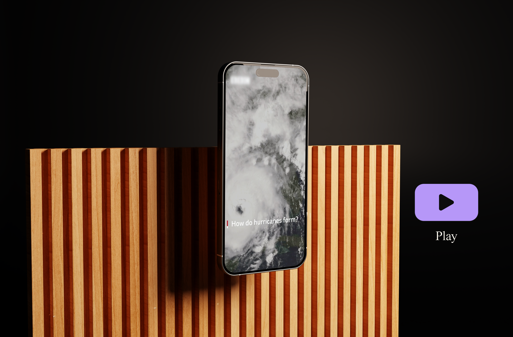

INTRO
L’obiettivo del progetto per un'emittente globale di primo piano era creare un contenuto visivo educativo che spiegasse in maniera chiara e sintetica come si formano gli uragani. Il progetto era composto da due elementi: una infografica dettagliata e un video reel per i social media, pensati per un pubblico ampio e per facilitare la comprensione di un fenomeno complesso. Era fondamentale mantenere uno stile visivo professionale e in linea con le linee guida del brand, garantendo coerenza e chiarezza comunicativa.
L’obiettivo del progetto per un'emittente globale di primo piano era creare un contenuto visivo educativo che spiegasse in maniera chiara e sintetica come si formano gli uragani. Il progetto era composto da due elementi: una infografica dettagliata e un video reel per i social media, pensati per un pubblico ampio e per facilitare la comprensione di un fenomeno complesso. Era fondamentale mantenere uno stile visivo professionale e in linea con le linee guida del brand, garantendo coerenza e chiarezza comunicativa.

LA SFIDA
Il progetto presentava diverse sfide tecniche e comunicative. La prima era legata alla necessità di raccogliere e sintetizzare informazioni scientifiche in modo accurato, per poi tradurle in un layout visivo che risultasse chiaro e immediato. Un altro aspetto critico era rendere comprensibili i concetti più complessi a un pubblico ampio, mantenendo uno stile che rispettasse le linee guida della rete. Infine, il design doveva garantire un equilibrio visivo tra la mappa, le icone e i testi, senza risultare sovraccarico.
Il progetto presentava diverse sfide tecniche e comunicative. La prima era legata alla necessità di raccogliere e sintetizzare informazioni scientifiche in modo accurato, per poi tradurle in un layout visivo che risultasse chiaro e immediato. Un altro aspetto critico era rendere comprensibili i concetti più complessi a un pubblico ampio, mantenendo uno stile che rispettasse le linee guida della rete. Infine, il design doveva garantire un equilibrio visivo tra la mappa, le icone e i testi, senza risultare sovraccarico.

LA SOLUZIONE
Per l’infografica, il contenuto è stato suddiviso in 9 concetti chiave, selezionati dopo una fase approfondita di ricerca e sintesi. Ogni concetto è stato rappresentato da un’icona dedicata, con colori accesi per enfatizzare i punti più rilevanti. È stato adottato uno stile minimalista, basato su una griglia ordinata, integrando una mappa mondiale per fornire un contesto geografico. Il video reel per Instagram ha seguito lo stesso schema visivo dell’infografica, mantenendo coerenza con i colori e le icone, ma arricchendo ogni punto con clip video brevi e musica di sottofondo per rafforzare la narrazione e migliorare la comprensione.
Per l’infografica, il contenuto è stato suddiviso in 9 concetti chiave, selezionati dopo una fase approfondita di ricerca e sintesi. Ogni concetto è stato rappresentato da un’icona dedicata, con colori accesi per enfatizzare i punti più rilevanti. È stato adottato uno stile minimalista, basato su una griglia ordinata, integrando una mappa mondiale per fornire un contesto geografico. Il video reel per Instagram ha seguito lo stesso schema visivo dell’infografica, mantenendo coerenza con i colori e le icone, ma arricchendo ogni punto con clip video brevi e musica di sottofondo per rafforzare la narrazione e migliorare la comprensione.
RISULTATO
Il progetto ha raggiunto l’obiettivo di spiegare in modo chiaro e visivamente coinvolgente il processo di formazione degli uragani. Sia l’infografica che il reel hanno presentato i 9 concetti chiave in maniera accessibile, rispettando le linee guida visive e mantenendo una qualità grafica adatta al livello del brand. La coerenza tra infografica e reel ha rafforzato l’impatto comunicativo, creando un contenuto che si adattava perfettamente sia a un contesto educativo che a un utilizzo su social media, aumentando l’interesse e la comprensione del pubblico per un argomento complesso.
Il progetto ha raggiunto l’obiettivo di spiegare in modo chiaro e visivamente coinvolgente il processo di formazione degli uragani. Sia l’infografica che il reel hanno presentato i 9 concetti chiave in maniera accessibile, rispettando le linee guida visive e mantenendo una qualità grafica adatta al livello del brand. La coerenza tra infografica e reel ha rafforzato l’impatto comunicativo, creando un contenuto che si adattava perfettamente sia a un contesto educativo che a un utilizzo su social media, aumentando l’interesse e la comprensione del pubblico per un argomento complesso.
